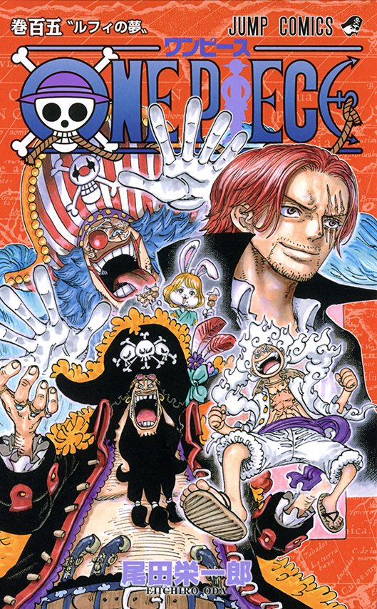
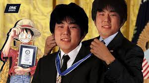

One Piece (stylized in all caps) is a Japanese manga series written and illustrated by Eiichiro Oda. It has been serialized in Shueisha's shōnen manga magazine Weekly Shōnen Jump since July 1997, with its individual chapters compiled into 105 tankōbon volumes as of March 2023. The story follows the adventures of Monkey D. Luffy, a boy whose body gained the properties of rubber after unintentionally eating a Devil Fruit. With his pirate crew, the Straw Hat Pirates, Luffy explores the Grand Line in search of the deceased King of the Pirates Gol D. Roger's ultimate treasure known as the "One Piece" in order to become the next King of the Pirates.
The manga spawned a media franchise, having been adapted into a festival film produced by Production I.G, and an anime series produced by Toei Animation, which began broadcasting in 1999. Additionally, Toei has developed fourteen animated feature films, one original video animation, and thirteen television specials. Several companies have developed various types of merchandising and media, such as a trading card game and numerous video games. The manga series was licensed for an English language release in North America and the United Kingdom by Viz Media and in Australia by Madman Entertainment. The anime series was licensed by 4Kids Entertainment for an English-language release in North America in 2004 before the license was dropped and subsequently acquired by Funimation in 2007.
One Piece has received praise for its storytelling, world-building, art, characterization, and humor. It has received many awards and is ranked by critics, reviewers, and readers as one of the best manga of all time. Several volumes of the manga have broken publishing records, including the highest initial print run of any book in Japan. In 2015 and 2022, One Piece set the Guinness World Record for "the most copies published for the same comic book series by a single author". It was the best-selling manga for eleven consecutive years from 2008 to 2018, and is the only manga that had an initial print of volumes of above 3 million continuously for more than 10 years, as well as the only that had achieved more than 1 million copies sold in all of its over 100 published tankōbon volumes. One Piece is the only manga whose volumes have ranked first every year in Oricon's weekly comic chart existence since 2008.
Synopsis

Setting
The world of One Piece is populated by humans and many other races, such as dwarves, fish-men, and giants. It is covered by two vast oceans, which are divided by a massive mountain range called the Red Line; The Grand Line, a sea that runs perpendicular to the Red Line, further divides them into four seas: North Blue, East Blue, West Blue, and South Blue. Surrounding the Grand Line are two regions called Calm Belts, similar to horse latitudes, which experience almost no wind or ocean currents and are the breeding ground for huge sea creatures called sea kings. Because of this, the calm belts are very effective barriers for those trying to enter the Grand Line. However, navy ships, members of an intergovernmental organization known as the World Government, are able to use a sea-prism stone to mask their presence from the sea kings and can simply pass through the calm belts. All other ships are forced to take a more dangerous route, going through a mountain at the first intersection of the Grand Line and the Red Line, a canal system known as Reverse Mountain. Sea water from each of the four seas runs up that mountain and merges at the top to flow down a fifth canal and into the first half of the Grand Line, called Paradise because how it compared to the second half. The second half of the Grand Line, beyond the second intersection with the Red Line, is known as the New World

Plot
Further information: List of One Piece characters
The series focuses on Monkey D. Luffy, a young man made of rubber, who, inspired by his childhood idol, the powerful pirate Red-Haired Shanks, sets off on a journey from the East Blue Sea to find the mythical treasure, the One Piece, and proclaim himself the King of the Pirates. In an effort to organize his own crew, the Straw Hat Pirates,[Jp 1] Luffy rescues and befriends a pirate hunter and swordsman named Roronoa Zoro, and they head off in search of the titular treasure. They are joined in their journey by Nami, a money-obsessed thief and navigator; Usopp, a sniper and compulsive liar; and Sanji, an amorous but chivalrous cook. They acquire a ship, the Going Merry,[Jp 2] and engage in confrontations with notorious pirates of the East Blue. As Luffy and his crew set out on their adventures, others join the crew later in the series, including Tony Tony Chopper, an anthropomorphized reindeer doctor; Nico Robin, an archaeologist and former Baroque Works assassin; Franky, a cyborg shipwright; Brook, a skeleton musician and swordsman; and Jimbei, a fish-man helmsman and former member of the Seven Warlords of the Sea. Once the Going Merry is damaged beyond repair, Franky builds the Straw Hat Pirates a new ship, the Thousand Sunny,[Jp 3] Together, they encounter other pirates, bounty hunters, criminal organizations, revolutionaries, secret agents, and soldiers of the corrupt World Government, and various other friends and foes, as they sail the seas in pursuit of their dreams.
Production

Concept and creation
Eiichiro Oda's interest in pirates began in his childhood, watching the animated series Vicky the Viking, which inspired him to want to draw a manga series about pirates.[2] The reading of pirate biographies influenced Oda to incorporate the characteristics of real-life pirates into many of the characters in One Piece; for example, the character Marshall D. Teach is based on and named after the historical pirate Edward "Blackbeard" Teach.[3] Apart from the history of piracy, Oda's biggest influence is Akira Toriyama and his series Dragon Ball, which is one of his favorite manga.[4] He was also inspired by The Wizard of Oz, claiming not to endure stories where the reward of adventure is the adventure itself, opting for a story where travel is important, but even more important is the goal.[5]
While working as an assistant to Nobuhiro Watsuki, Oda began writing One Piece in 1996.[6] It started as two one-shot stories entitled Romance Dawn[6]—which would later be used as the title for One Piece's first chapter and volume. They both featured the character of Luffy, and included elements that would appear later in the main series. The first of these short stories was published in August 1996 in Akamaru Jump and later in One Piece Red. The second was published in the 41st issue of Weekly Shōnen Jump in 1996, and reprinted in 1998 in Oda's short story collection, Wanted!.[7] In an interview with TBS, Takanori Asada, the original editor of One Piece, revealed that the manga was rejected by Weekly Shōnen Jump three times before Shueisha agreed to publish the series.[8]
Development
When creating a Devil Fruit, Oda thinks of something that would fulfill a human desire; he added that he does not see why he would draw a Devil Fruit unless the fruit's appearance would entice one to eat it.[9] The names of many special attacks, as well as other concepts in the manga, consist of a form of punning in which phrases written in kanji are paired with an idiosyncratic reading. The names of some characters' techniques are often mixed with other languages, and the names of several of Zoro's sword techniques are designed as jokes; they look fearsome when read by sight but sound like kinds of food when read aloud. For example, Zoro's signature move is Onigiri, which is written as demon cut but is pronounced the same as rice ball in Japanese. Eisaku Inoue, the animation director, has said that the creators did not use these kanji readings in the anime since they "might have cut down the laughs by about half".[10] Nevertheless, Konosuke Uda, the director, said that he believes that the creators "made the anime pretty close to the manga".[10]
Oda was "sensitive" about how his work would be translated.[11] In many instances, the English version of the One Piece manga uses one onomatopoeia for multiple onomatopoeia used in the Japanese version. For instance, "saaa" (the sound of light rain, close to a mist) and "zaaa" (the sound of pouring rain) are both translated as "fshhhhhhh".[12] Unlike other manga artists, Oda draws everything that moves himself to create a consistent look while leaving his staff to draw the backgrounds based on sketches he has drawn. In this way, he wishes to maintain a uniform representation, leaving only the realization of the backgrounds to his staff, based on his sketches.[13] This workload forces him to keep tight production rates, starting from five in the morning until two in the morning the next day, with short breaks only for meals. Oda's work program includes the first three days of the week dedicated to the writing of the storyboard and the remaining time for the definitive inking of the boards and for the possible coloring.[14] When a reader asked who Nami was in love with, Oda replied that there would hardly be any love affairs within Luffy's crew. The author also explained he deliberately avoids including them in One Piece since the series is a shōnen manga and the boys who read it are not interested in love stories.[15]
Conclusion
Oda revealed that he originally planned One Piece to last five years, and that he had already planned the ending. However, he found it would take longer than he had expected as Oda realized that he liked the story too much to end it in that period of time.[16] In 2016, nineteen years after the start of serialization, the author said that the manga has reached 65% of the story he intends to tell.[17] In July 2018, on the occasion of the twenty-first anniversary of One Piece, Oda said that the manga has reached 80% of the plot,[18] while in January 2019, he said that One Piece is on its way to the conclusion, but that it could exceed the 100th volume.[19] In August 2019, Oda said that, according to his predictions, the manga will end between 2024 and 2025.[20] However, Oda stated that the ending would be what he had decided in the beginning; he is committed to seeing it through.[21] In a television special aired in Japan, Oda said he would be willing to change the ending if the fans were to be able to predict it.[5] In August 2020, Shueisha announced in the year's 35th issue of Weekly Shōnen Jump that One Piece was "headed toward the upcoming final saga."[22] On January 4, 2021, One Piece reached its thousandth chapter.[23][24][25] In June 2022, Oda announced that the manga would enter a one-month break to prepare for its 25th anniversary and its final saga, set to begin with the release of chapter 1054.[26]
Publication

Main series
Main article: List of One Piece manga volumes
Further information: Lists of One Piece chapters
See also: List of One Piece chapters (1–186), List of One Piece chapters (187–388), List of One Piece chapters (389–594), List of One Piece chapters (595–806), List of One Piece chapters (807–1015), and List of One Piece chapters (1016–current)
Written and illustrated by Eiichiro Oda, One Piece has been serialized by Shueisha in the shōnen manga anthology Weekly Shōnen Jump since July 22, 1997.[27][28] Shueisha has collected its chapters into individual tankōbon volumes. The first volume was released on December 24, 1997.[29] By March 3, 2023, a total of 105 volumes have been released.[30]
The One Piece manga was licensed for an English language release by Viz Media, who published it via chapters in the manga anthology Shonen Jump, since the magazine's launch in November 2002, and in bound volumes since June 30, 2003.[31][32][33] In 2009, Viz announced the release of five volumes per month during the first half of 2010 to catch up with the serialization in Japan.[34] Following the discontinuation of the print Shonen Jump, Viz began releasing One Piece chapterwise in its digital successor Weekly Shonen Jump on January 30, 2012.[35] In the United Kingdom, the volumes were published by Gollancz Manga, starting in March 2006,[36] until Viz Media took it over after the fourteenth volume.[37][38] In Australia and New Zealand, the English volumes have been distributed by Madman Entertainment since November 10, 2008.[39] In Poland, Japonica Polonica Fantastica is publishing the manga,[40] Glénat in France,[41] Panini Comics in Mexico,[42] LARP Editores and later by Ivrea in Argentina,[43][44] Planeta de Libros in Spain,[45] Edizioni Star Comics in Italy,[46] and Sangatsu Manga in Finland.[47]
Spin-offs and crossovers
Oda teamed up with Akira Toriyama to create a single crossover of One Piece and Toriyama's Dragon Ball. Entitled Cross Epoch, the one-shot was published in the December 25, 2006, issue of Weekly Shōnen Jump and the April 2011 issue of the English Shonen Jump.[48] Oda collaborated with Mitsutoshi Shimabukuro, author of Toriko, for a crossover one-shot of their series titled Taste of the Devil Fruit (実食! 悪魔の実!!, Jitsushoku! Akuma no Mi!!, lit. "The True Food! Devil Fruit!!"),[49] which ran in the April 4, 2011, issue of Weekly Shōnen Jump. The spin-off series One Piece Party (ワンピースパーティー, Wan Pīsu Pātī), written by Ei Andō in a super deformed art style, began serialization in the January 2015 issue of Saikyō Jump.[50]